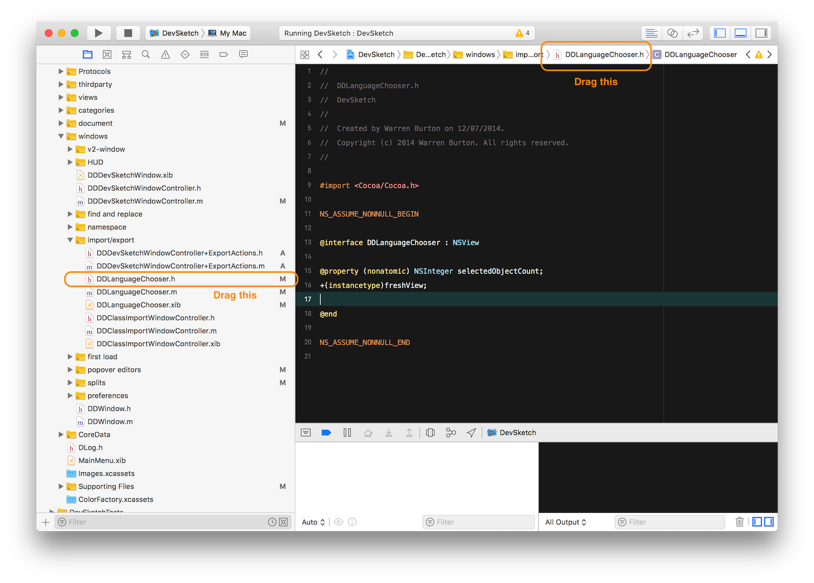

DevSketch is a tool for Swift and Objective-C developers. Its good for prototyping components and analysing existing code bases.
Create a new document. You can choose from 4 preset sets of SDK’s or just carry on by clicking the close button.
You can configure the workspace in a couple of places.
Select DevSketch > Preferences…
This window allows you to pick which Xcode you are using.
You can tell DevSketch who you are:
How you’d like your headers to be generated:
Select Document > Edit Document Settings…
Here you can add or remove SDKs and give the project a name.
If you are generating Objective-C code you can add a prefix to all type names.
The document window has 3 sections.
This is where you find objects you have created or objects from the SDK’s that your project contains.
This is visual map of your objects and its relationships to other objects. An object can exist in the library but not be visible on the map.
The inspectors tell you about the selected object (or objects).
You can collapse or expand the left and right sections by:
This contains a representation of the objects in your workspace.
Double click on the map to add a new Class object.
Right click on the map and select from the menu to add any other kind of object.

Objective-C does not support code generation for structs.
Enumeration
Double click the object to edit the name and parent.

Select the object and press CMD+L (Object > Add Property)
Click Add to commit the addition.
You can edit the property:
Select the object and press CMD+M (Object > Add Method)

e.g
You can edit the method:
![Double click method]
The map representation of an object can be collapsed or expanded.

Expanded representations will hide the table at smaller magnifications.
You can see that there are circles around your objects. This is the heat map.
It shows the relative density of connections to an object. It allows you to see from a distance what objects are important or overused within a code base
Denser colors mean that this object has relatively more connections than others.
You can change the colors in the preferences panel. DevSketch > Preferences…

If you don’t want to see the heat map use View > Hide Heat Map
DevSketch will examine your object definition and look for types that don’t exist in your database or the imported SDK’s.
What this means is you can declare a type ahead of time:

The Orphan Inspector allows you to be flexible in your design and naming. If you are not sure what an object should be named or if it should even exist you can delay creation till you are ready.
While you are working you will inevitably discover points where you want to change the design.
Select what object type you want to create from the menu.
Expand the source object (CMD+]) if you haven’t already.
Select the attributes you want to move. You can pick multiple items with the SHIFT or CMD modifiers.
There are two ways to move attributes from one object to another.


All good code deserves tests. DevSketch allows you to define the tests.
Select the object you want to add tests to and press CMD+T (Object > Add Test)

Once you have sorted out how you want your system to work its time to generate code.

This isn’t finished code as you may need to make decisions about return values. Placeholders are left so that you do this where needed.
DevSketch offers several ways to get your code into your project.
The Source Viewer is at the base of the right hand inspector. You can shrink it away when you aren’t using it.
You can choose to create code stubs in Swift or Objective-C

You can create either object or test code.
When dragging a file to Xcode remember:

You can export many objects at the same time.
WARNING. This operation can overwrite files in your project. Make sure you are using source control
Use Document > Export All…
The other thing that DevSketch will do is analyse an existing project or single files.
There are two ways to get files into DevSketch.
Drag a file direct from the Xcode project explorer and any of the other proxies that are provided. Or drag from anywhere in macOS.

Ideally create a new document with the appropriate SDK set. Or just import into an existing project. You might be getting a lot of new content.
The sample will look at an open source vector editor called Inkpad.
Open the Xcode tab in the left hand inspector.
Choose the folder that contains the .xcodeproj file. An import window will appear.
Pick the folders and files you want to import. Press Import.

Depending on the size of the project this may take a little amount of time. DevSketch is looking for connections between all the objects. Go and grab a coffee.

You can hit the zoom to display all button to show all the objects. They will be stacked along the bottom of the page.
You may want to find out somethings about a codebase before you start to work on it.
Most iOS projects have some UIViewController instances. Open the library tab.
You can now see all the view controllers gathered in one place.
WDCanvasController looks very bright on the heat map so you can bring it down to check out further.
Zoom in (CMD+.) to reveal more information.

Move WDCanvasController to a blank space.
Select Object > Show all Related. All the objects that depend on or are depended on by will arrange themselves nearby.
Three of the objects that WDCanvasController depends on seem to have a high density of links.
Look at little closer at them. All three are heavily depended on.
These files would be interesting places to start if you wanted to investigate the code base further.
Also check out the classes that adopt NSCoding. These would be good places to start if you wanted to look at the archiving format.

If the link drawing is confusing, you can switch off aspects in the View menu
Theres lots more you can do with the analysis. You don’t have to have all objects on screen at once. Remember Delete to remove from map. Alt+Delete to really delete.